High availability kubernetes cluster on Raspberry Pi
by Karol Szymanowski
Agenda
- Essentials: raspberry PI, storage, power supply...
- Setting up Raspberry Pi
- Installing Kubernetes
- Building perfect k8s system
- Development and deployment to the kubernetes
- Summary
Essentials
Picking right equipment
Raspberry pi

Raspberry pi 1 model A/A+/B
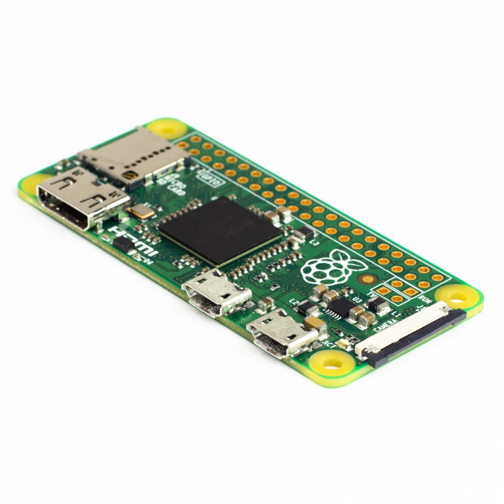Raspberry pi zero
Raspberry 2 model B
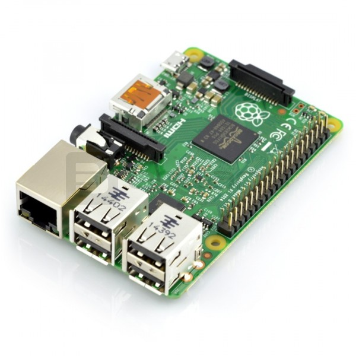Raspberry 3 model A+
Raspberry 3 model B/B+
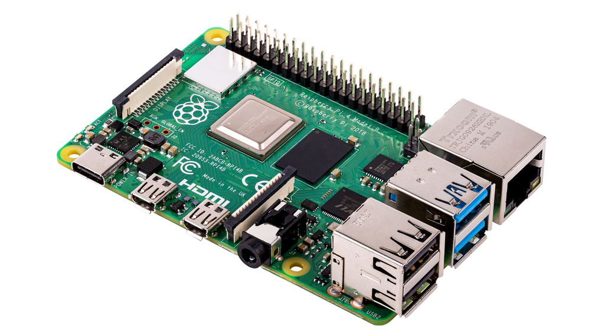Raspberry 4 model B

Raspberry Compute Module model 1
Raspberry CM model 3/3+/3 lite/3+ lite
Power Supply
Storage

Networking
Other...
Setting up Raspberry Pi
Configuring cluster with Ansible
Initial setup
---
- hosts: all
remote_user: "{{ default_username }}"
become: true
gather_facts: true
tasks:
- name: Create target user (Raspbian/Debian)
user:
name: "{{ username }}"
password: "{{ password | password_hash('sha512') }}"
groups:
- sudo
- users
- name: Copy pub key to new user
authorized_key:
user: "{{ username }}"
state: present
key: "{{ lookup('file', lookup('env','HOME') + '/.ssh/id_rsa.pub') }}"
- name: Disable Password Authentication
lineinfile:
dest: /etc/ssh/sshd_config
regexp: '^PasswordAuthentication'
line: "PasswordAuthentication no"
state: present
backup: yes
- name: Update system
apt:
cache_valid_time: 3600
update_cache: yes
upgrade: safe
- name: Change hostname
hostname:
name: "{{ inventory_hostname }}"
notify: Reboot
handlers:
- name: Reboot
reboot:
- hosts: all
remote_user: "{{ username }}"
become: true
gather_facts: true
tasks:
- name : Kill all "{{ default_username }}" user's processes
shell : "sudo pkill -u {{ default_username }}"
- name: Remove default account
user:
name: "{{ default_username }}"
remove: yes
state: absent
Setting up data center
---
- hosts: all
remote_user: "{{ username }}"
become: true
gather_facts: true
tasks:
- name: Update system
apt:
cache_valid_time: 3600
update_cache: yes
upgrade: safe
- name: Install dependencies
apt:
pkg:
- fail2ban
- ufw
- libpq-dev
- python-psycopg2
---
- hosts: database_rpi_master
remote_user: "{{ username }}"
become: true
gather_facts: true
vars:
db_password: "{{ lookup('password', 'postgres-password chars=ascii_letters length=30') }}"
tasks:
roles:
- role: geerlingguy.postgresql
become: true
vars:
postgresql_databases:
- name: "{{ k3s_db }}"
lc_collate: 'en_GB.UTF-8'
lc_ctype: 'en_GB.UTF-8'
postgresql_users:
- name: "{{ k3s_db_user }}"
password: "{{ db_password }}"
postgresql_locales:
- 'en_GB.UTF-8'
postgres_users_no_log: false
postgresql_global_config_options:
- option: listen_addresses
value: '*'
postgresql_hba_entries:
- {type: local, database: all, user: postgres, auth_method: peer}
- {type: local, database: all, user: all, auth_method: peer}
- {type: host, database: all, user: all, address: '127.0.0.1/32', auth_method: md5}
- {type: host, database: all, user: all, address: '::1/128', auth_method: md5}
- {type: host, database: "{{ k3s_db }}", user: "{{ k3s_db_user }}", address: '192.168.0.1/24', auth_method: md5}
- hosts: nfs_rpi
remote_user: "{{ username }}"
become: true
gather_facts: true
roles:
- role: geerlingguy.nfs
Installing Kubernetes
Installing and configuring k8s cluster using k3s
Picking right distribution
- Red Hat OpenShift
- Rancher
- Apache Mesosphere
- CoreOS Tectonic
- Telekube
- Heptio
- Kind
- Microk8s
K3S
“Lightweight Kubernetes. Easy to install, half the memory, all in a binary of less than 50mb.”
Architecture
High-Availability K3s Server with an External DB

Picking external database
- Embedded SQLite - default
- PostgreSQL
- MySQL
- MariaDB
- etcd - default choice for k8s
- Embedded DQLite for High Availability (experimental)
Automating process
---
- hosts: k3s_rpi_master
remote_user: "{{ username }}"
become: true
gather_facts: true
tasks:
- set_fact:
db_password: "{{ lookup('password', 'postgres-password chars=ascii_letters length=30') }}"
with_items: "{{ groups['database_rpi_master'][0] }}"
- name: Install k3s on master node
shell: "curl -sfL https://get.k3s.io | sh -s - --no-deploy servicelb --no-deploy traefik --datastore-endpoint=\"postgres..."
with_items: "{{ groups['database_rpi_master'][0] }}"
- name: Get token from master
shell: "cat /var/lib/rancher/k3s/server/node-token"
register: k3s_node_token
- name: Wait for k3s server to run
wait_for:
port: 6443
delay: 10
- name: Verify k3s master installation
shell: k3s kubectl get node
- hosts: k3s_rpi_worker
remote_user: "{{ username }}"
become: true
gather_facts: true
tasks:
- set_fact:
k3s_master_host: "{{ groups['k3s_rpi_master'][0] }}"
- set_fact:
k3s_master_token: "{{ hostvars[k3s_master_host]['k3s_node_token'].stdout }}"
- name: Check if k3s is already installed
shell: k3s -v
register: is_k3s_running
ignore_errors: true
- name: Install k3s on worker nodes and connect to master
shell: "curl -sfL https://get.k3s.io | K3S_URL=https://{{ hostvars[k3s_master_host]['ansible_host'] }}:6443 K3S_TOKEN={{ k3s_master_token }} sh -"
when: is_k3s_running is failed
- name: Verify k3s installation
shell: k3s -v
Building perfect system
Cluster backups
---
apiVersion: batch/v1beta1
kind: CronJob
metadata:
name: cluster-backup
labels:
database: postgres
namespace: cluster-backup
spec:
schedule: "0 0 * * *"
jobTemplate:
spec:
template:
spec:
hostNetwork: true
containers:
- name: cluster-backup
image: tetrash/postgres-gcs-backup
env:
- name: GCS_KEY_FILE_PATH
value: "/etc/gcp/gcp-key.yaml"
restartPolicy: OnFailure
volumes:
- name: gcp
secret:
secretName: gcp-key.yaml
Cluster monitoring
Kubernetes default logs
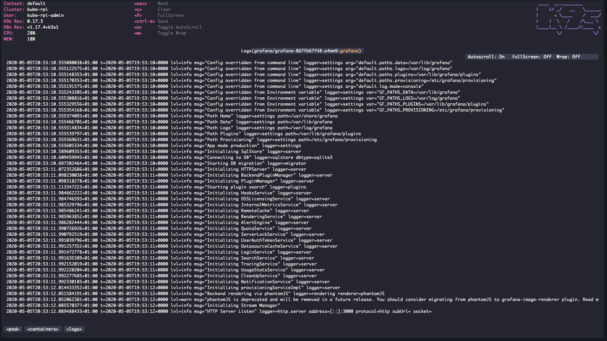Alternatives for k8s logs
Influxdb + telegraf
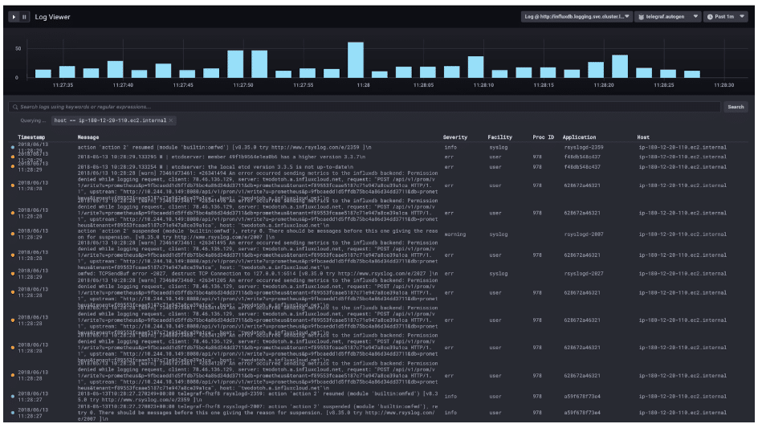Influxdb - docker images
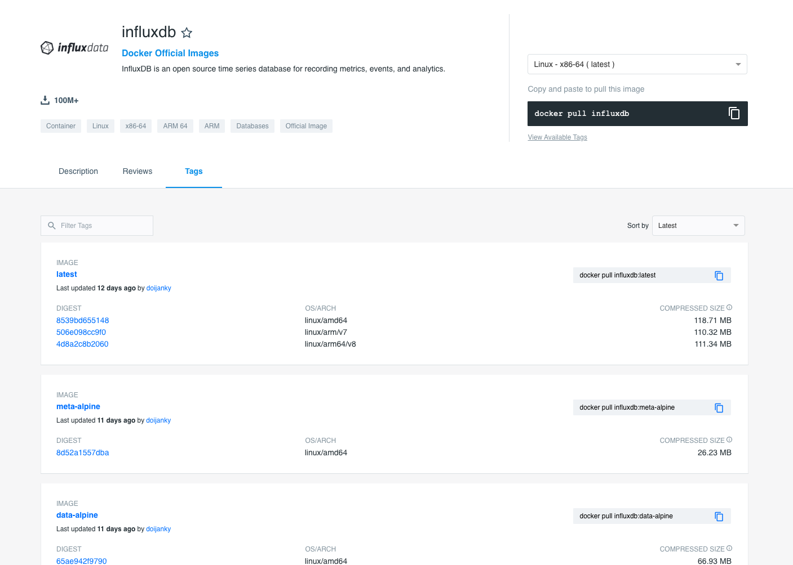Prometheus-operator
"The Prometheus Operator makes the Prometheus configuration Kubernetes native and manages and operates Prometheus and Alertmanager clusters. It is a piece of the puzzle regarding full end-to-end monitoring."
Prometheus-operator CRDs
- Prometheus
- ServiceMonitor
- PodMonitor
- PrometheusRule
- Alertmanager
* CRD = custom resource definition
Example prometheus deployment
---
apiVersion: monitoring.coreos.com/v1
kind: Prometheus
metadata:
labels:
app: prometheus-operator-prometheus
name: prometheus-operator-prometheus
namespace: prometheus-operator
spec:
additionalScrapeConfigs:
key: prometheus-arm-exporter.yaml
name: arm-exporter-scrape-configs
alerting:
alertmanagers:
- apiVersion: v2
name: prometheus-operator-alertmanager
namespace: prometheus-operator
pathPrefix: /
port: web
baseImage: prom/prometheus
enableAdminAPI: false
externalUrl: http://prometheus-operator-prometheus.prometheus-operator:9090
listenLocal: false
logFormat: logfmt
logLevel: info
paused: false
podMonitorNamespaceSelector: {}
podMonitorSelector:
matchLabels:
release: prometheus-operator
portName: web
replicas: 1
retention: 10d
routePrefix: /
ruleNamespaceSelector: {}
ruleSelector:
matchLabels:
app: prometheus-operator
release: prometheus-operator
securityContext:
fsGroup: 2000
runAsNonRoot: true
runAsUser: 1000
serviceAccountName: prometheus-operator-prometheus
serviceMonitorSelector:
matchLabels:
release: prometheus-operator
Grafana (result)
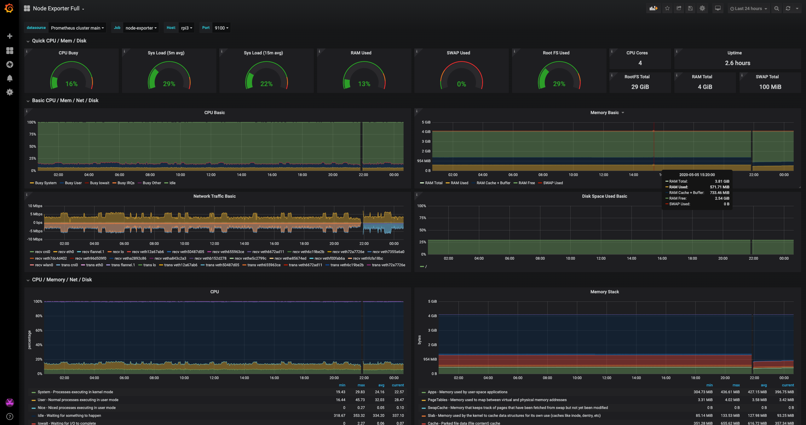Service mesh - linkerd
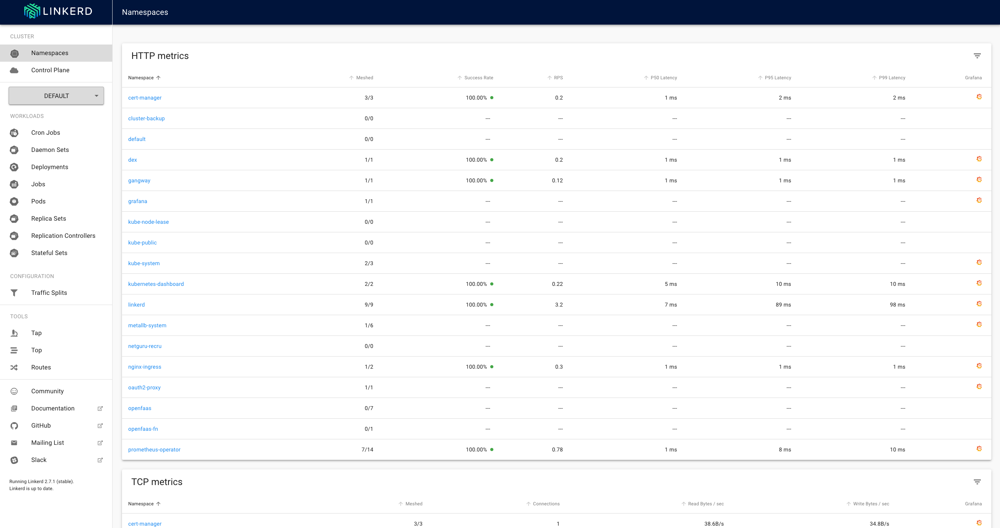Linkerd - grafana dashboards
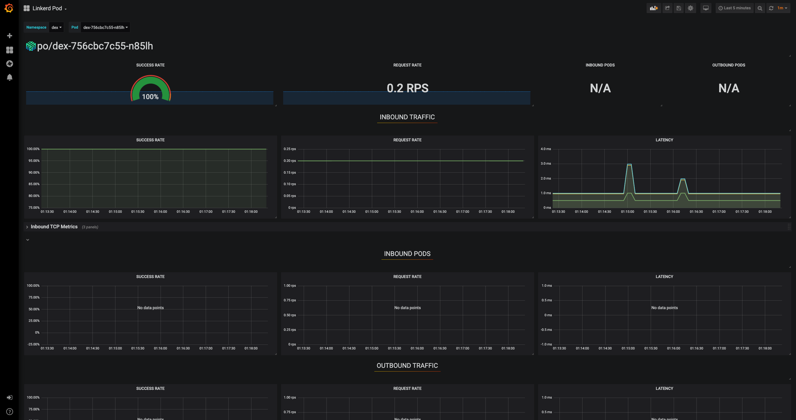Kubernetes authentication | authorization | rbac | sso | securing apps
oauth2-proxy
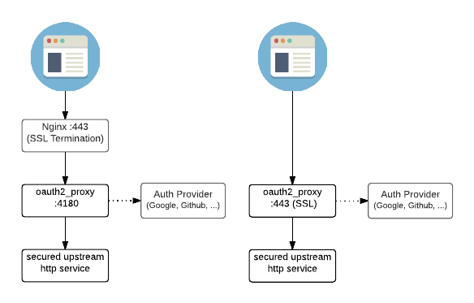Securing apps with oauth2-proxy
---
apiVersion: apps/v1
kind: Deployment
metadata:
labels:
k8s-app: oauth2-proxy
name: oauth2-proxy
namespace: kube-system
spec:
replicas: 1
selector:
matchLabels:
k8s-app: oauth2-proxy
template:
metadata:
labels:
k8s-app: oauth2-proxy
spec:
containers:
- args:
- --provider=github
- --email-domain=*
- --upstream=file:///dev/null
- --http-address=0.0.0.0:4180
# Register a new application
# https://github.com/settings/applications/new
env:
- name: OAUTH2_PROXY_CLIENT_ID
value: Client ID
- name: OAUTH2_PROXY_CLIENT_SECRET
value: Client Secret
# docker run -ti --rm python:3-alpine python -c 'import secrets,base64; print(base64.b64encode(base64.b64encode(secrets.token_bytes(16))));'
- name: OAUTH2_PROXY_COOKIE_SECRET
value: SECRET
image: quay.io/pusher/oauth2_proxy:latest
imagePullPolicy: Always
name: oauth2-proxy
ports:
- containerPort: 4180
protocol: TCP
---
apiVersion: v1
kind: Service
metadata:
labels:
k8s-app: oauth2-proxy
name: oauth2-proxy
namespace: kube-system
spec:
ports:
- name: http
port: 4180
protocol: TCP
targetPort: 4180
selector:
k8s-app: oauth2-proxy
---
apiVersion: networking.k8s.io/v1beta1
kind: Ingress
metadata:
annotations:
nginx.ingress.kubernetes.io/auth-url: "https://$host/oauth2/auth"
nginx.ingress.kubernetes.io/auth-signin: "https://$host/oauth2/start?rd=$escaped_request_uri"
name: external-auth-oauth2
namespace: kube-system
spec:
rules:
- host: __INGRESS_HOST__
http:
paths:
- backend:
serviceName: kubernetes-dashboard
servicePort: 80
path: /
---
apiVersion: networking.k8s.io/v1beta1
kind: Ingress
metadata:
name: oauth2-proxy
namespace: kube-system
spec:
rules:
- host: __INGRESS_HOST__
http:
paths:
- backend:
serviceName: oauth2-proxy
servicePort: 4180
path: /oauth2
tls:
- hosts:
- __INGRESS_HOST__
secretName: __INGRESS_SECRET__
Authentication strategies
- X509 Client Certs
- Bootstrap Tokens
- Static Password File
- Service Account Tokens
- OpenID Connect Tokens
- Webhook Token Authentication
- Authenticating Proxy
Dex - identity provider
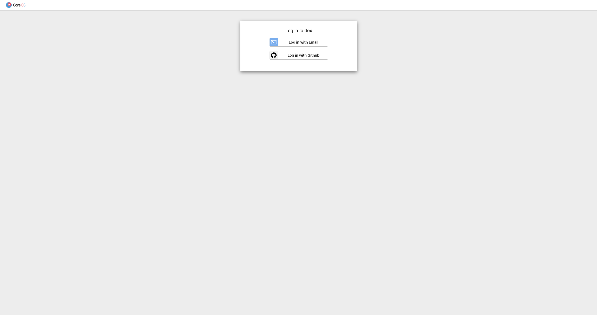“Dex's main production use is as an auth-N addon in CoreOS's enterprise Kubernetes solution, Tectonic. Dex runs natively on top of any Kubernetes cluster using Third Party Resources and can drive API server authentication through the OpenID Connect plugin. Clients, such as the Tectonic Console and kubectl, can act on behalf users who can login to the cluster through any identity provider dex supports.”
RBAC with dex
---
apiVersion: rbac.authorization.k8s.io/v1
kind: ClusterRoleBinding
metadata:
name: admins
roleRef:
apiGroup: rbac.authorization.k8s.io
kind: ClusterRole
name: admin
subjects:
- apiGroup: rbac.authorization.k8s.io
kind: User
name: szyma.karol@gmail.com
---
apiVersion: rbac.authorization.k8s.io/v1
kind: ClusterRoleBinding
metadata:
name: red-team
roleRef:
apiGroup: rbac.authorization.k8s.io
kind: ClusterRole
name: cluster-read-all
subjects:
- apiGroup: rbac.authorization.k8s.io
kind: Group
name: kube-rpi:red
Result: Easier users management
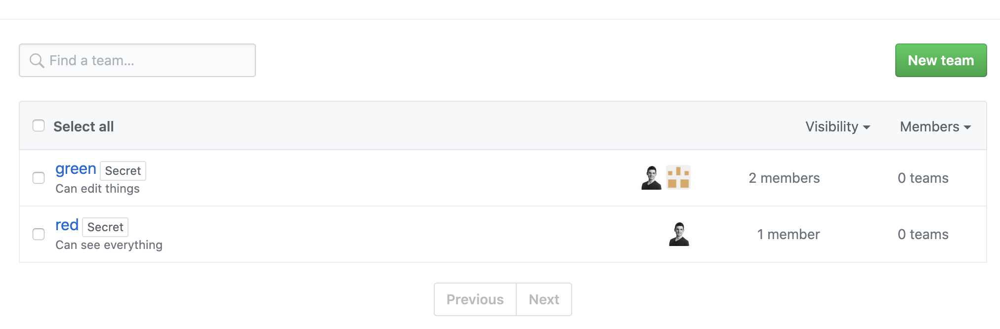Gangway
Gangway allows users to self-configure their kubectl configuration in a few short steps.

Building docker images for arm architecture
Multiarch images
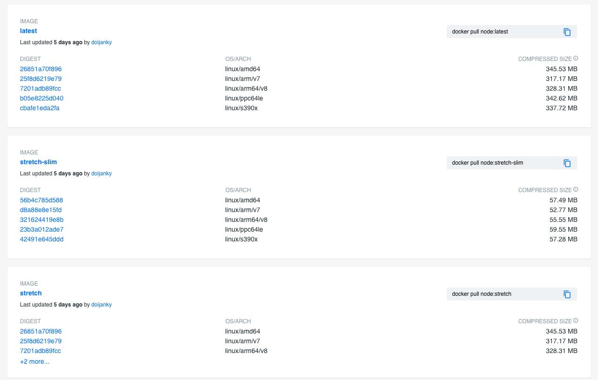Buildx overview
"It provides the same user experience as docker build with many new features like creating scoped builder instances and building against multiple nodes concurrently."
Buildx - experimental feature
$ docker buildx build \
> --progress plain \
> --platform=linux/amd64,linux/arm64,linux/arm/v7 \
> -t myname/myapp:latest \
> --push .
Alternative method - do it manually
$ GOOS=linux GOARCH=$ARCH CGO_ENABLED=0 go build -mod=vendor -ldflags="-s -X github.com/coreos/prometheus-operator/pkg/version.Version=$VERSION" -o operator ./cmd/operator/main.go
$ docker build -t docker.io/rmb938/prometheus-operator-multi-arch:$GIT_VERSION-$ARCH --build-arg ARCH=armv7 --build-arg OS=linux .
$ docker build -t docker.io/rmb938/prometheus-config-reloader-multi-arch:$GIT_VERSION-$ARCH --build-arg ARCH=$ARCH --build-arg OS=linux -f cmd/prometheus-config-reloader/Dockerfile .
$ DOCKER_CLI_EXPERIMENTAL=enabled docker manifest create -a "docker.io/rmb938/prometheus-operator-multi-arch:$GIT_VERSION" "docker.io/rmb938/prometheus-operator-multi-arch:$GIT_VERSION-amd64" "docker.io/rmb938/prometheus-operator-multi-arch:$GIT_VERSION-arm" "docker.io/rmb938/prometheus-operator-multi-arch:$GIT_VERSION-arm64"
$ DOCKER_CLI_EXPERIMENTAL=enabled docker manifest annotate --arch arm "docker.io/rmb938/prometheus-operator-multi-arch:$GIT_VERSION" "docker.io/rmb938/prometheus-operator-multi-arch:$GIT_VERSION-arm"
$ DOCKER_CLI_EXPERIMENTAL=enabled docker manifest annotate --arch arm64 "docker.io/rmb938/prometheus-operator-multi-arch:$GIT_VERSION" "docker.io/rmb938/prometheus-operator-multi-arch:$GIT_VERSION-arm64"
$ DOCKER_CLI_EXPERIMENTAL=enabled docker manifest push "docker.io/rmb938/prometheus-operator-multi-arch:$GIT_VERSION"